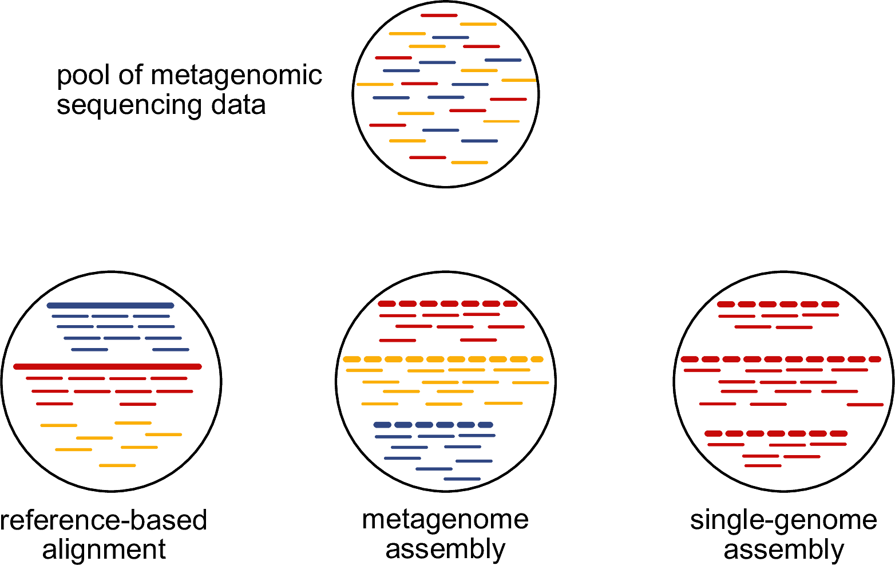

For this chapter’s exercises, if not already performed, you will need to create the conda environment from the yml file in the following link (right click and save as to download), and once created, activate the environment with:
PDF version of these slides can be downloaded from here.
12.1 Introduction
First of all, what is a metagenomic sample? Metagenomic sample is a sample that consists of DNA from more than one source. The number and the type of sources might vary widely between different samples. Typical sources for ancient remains are e.g. the host organism and the microbial species. The important part is that we generally do not know the origin of a DNA molecule prior to analysing the sequencing data generated from the DNA library of this sample. In the example presented in Figure 1, our metagenomic sample has DNA from three different sources, here coloured in blue, red, and yellow.

Figure 1: Overview of the ways how to analyse metagenomic sequencing data.
How can we determine the sources of the DNA that we have in our metagenomic sample? There are three main options whose pros and cons are summarised in Table 1.
Table 1: Pros and cons of the major methods for determining the sources of the DNA.
method
pros
cons
reference-based alignment
highly sensitive, applicable to aDNA samples
requires all sources to be represented in database
single-genome assembly
high-quality genomes from cultivated bacteria
not available for ancient DNA samples
metagenome assembly
able to recover unknown diversity present in sample
highly dependent on preservation of ancient DNA
Unitl recently, the only option for ancient DNA samples was to take the short-read sequencing data and align them against some known reference genomes. However, this approach is heavily relying on the whether all sources of our samples are represented in the available reference genomes. If a source is missing in the reference database - in our toy example, this is the case for the yellow source (Figure 1) -, then we won’t be able to detect it using this reference database.
While there is a potential workaround for modern metagenomic samples, single-genome assembly it relies on being able to cultivate a microbial species to obtain an isolate. This is unfeasible for ancient metagenomic samples because there are no more viable microbial cells available that could be cultivated.
Around 2015, a technical revolution started when the first programs, such as MEGAHIT (Li et al. 2015) and metaSPAdes (Nurk et al. 2017), were published that could successfully perform de novo assembly from metagenomic data. Since then, tens of thousands metagenomic samples have been assembled and it was revealed that even well studied environments, such as the human gut microbiome, have a lot of additional microbial diversity that could not be discovered via culturing and isolation (Almeida et al. 2021).
The technical advancement of now being able to perform de novo assembly on metagenomic samples led to an explosion of studies that analysed samples that were considered almost impossible to study beforehand. For researchers that are exposed to ancient DNA, the imminent question arises: can we apply the same methods to ancient DNA data? In this practical, we will walk through all required steps that are necessary to successfully perform de novo assembly from ancient DNA metagenomic sequencing data and show you what you can do once you have obtained the data.
Almeida, Alexandre, Stephen Nayfach, Miguel Boland, Francesco Strozzi, Martin Beracochea, Zhou Jason Shi, Katherine S. Pollard, et al. 2021. “A Unified Catalog of 204,938 Reference Genomes from the Human Gut Microbiome.”Nature Biotechnology 39 (1): 105–14. https://doi.org/10.1038/s41587-020-0603-3.
Li, Dinghua, Chi-Man Liu, Ruibang Luo, Kunihiko Sadakane, and Tak-Wah Lam. 2015. “MEGAHIT: An Ultra-Fast Single-Node Solution for Large and Complex Metagenomics Assembly via Succinct de Bruijn Graph.”Bioinformatics 31 (10): 1674–76. https://doi.org/10.1093/bioinformatics/btv033.
Nurk, Sergey, Dmitry Meleshko, Anton Korobeynikov, and Pavel A. Pevzner. 2017. “metaSPAdes: A New Versatile Metagenomic Assembler.”Genome Research 27 (5): 824–34. https://doi.org/10.1101/gr.213959.116.